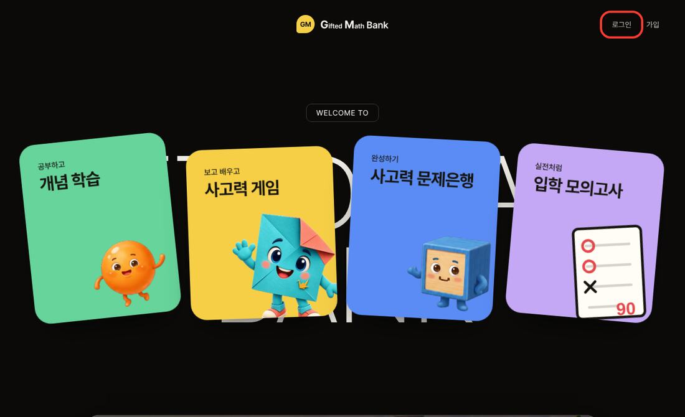
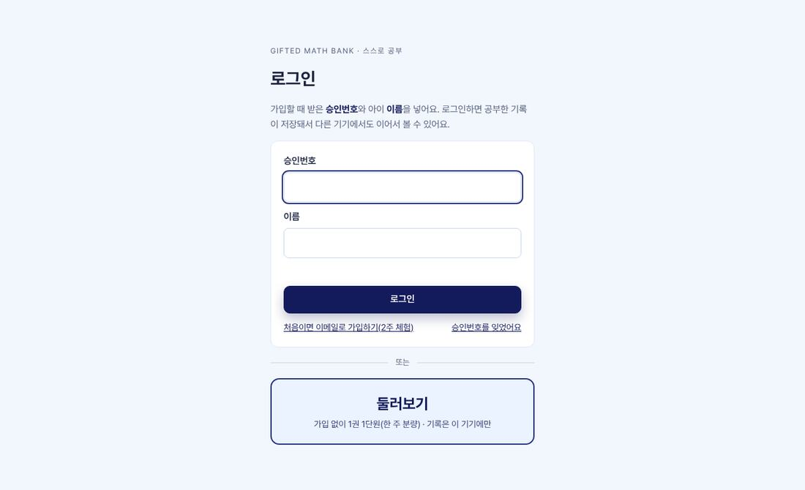
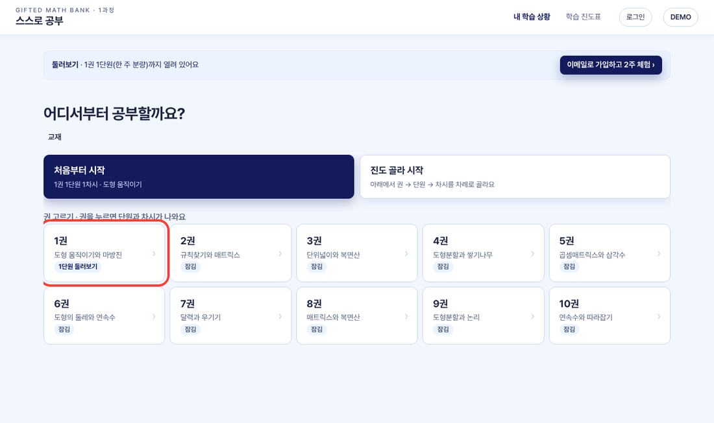
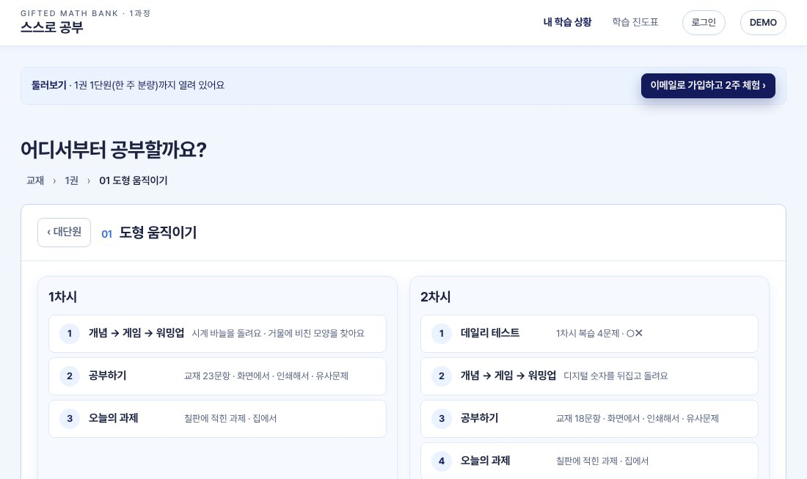
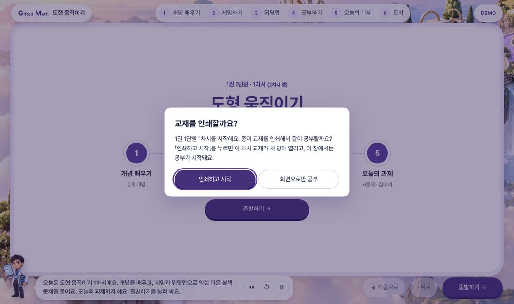
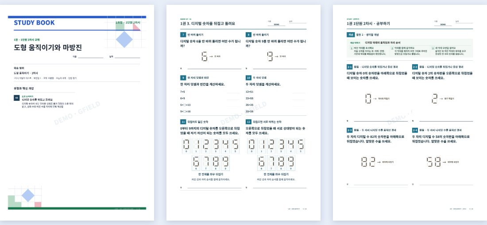
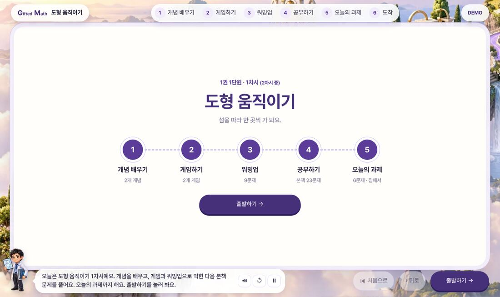
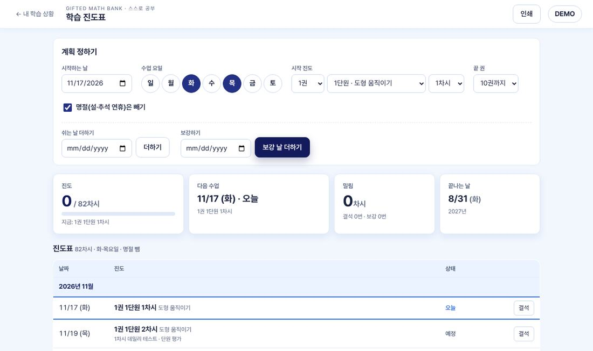
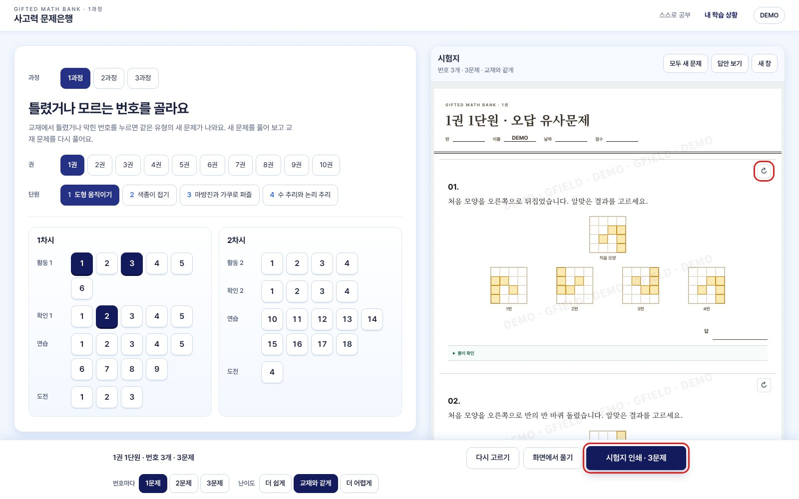
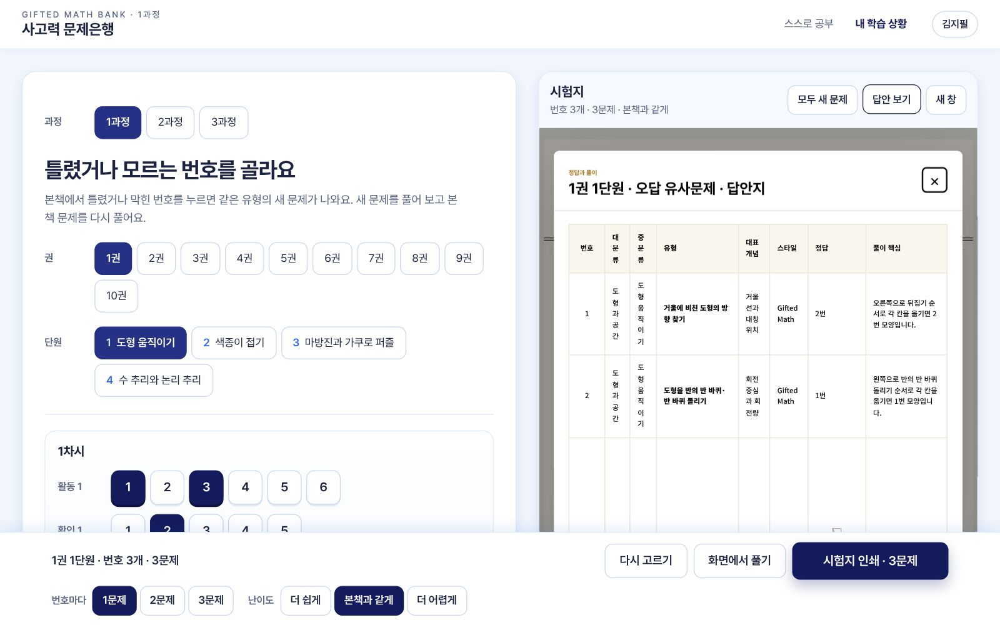

컴퓨터(PC) 화면 기준으로, 집에서 아이와 함께 쓰는 순서대로 적었어요. 로그인부터 교재 인쇄, 진도표, 틀린 문제로 시험지 만들기까지 이 한 장이면 돼요. 크롬이나 엣지 브라우저를 권해요.


한 번 접속하면 컴퓨터에 계속 저장돼요. 같은 컴퓨터·같은 브라우저에서는 다음부터 로그인하지 않아도 바로 이어서 공부할 수 있어요(60일). 여러 사람이 함께 쓰는 컴퓨터라면 공부가 끝난 뒤 「내 학습 상황」 화면 위 오른쪽의 로그아웃을 눌러 주세요.
첫 화면에서 개념 학습(스스로 공부)으로 들어가면 「어디서부터 공부할까요?」가 나와요.

단원을 고르면 차시 카드가 나와요. 카드마다 그 차시에 할 일이 차례대로 적혀 있어요. N차시 공부 시작하기를 누르면 공부가 시작돼요.

「잠김」이라고 적힌 권은 아직 열리지 않은 권이에요. 열린 권만 공부할 수 있어요.
차시를 시작할 때마다 「교재를 인쇄할까요?」가 먼저 떠요.

교재는 그 차시 하나를 통째로 묶어요. 표지 다음에 차례대로 들어가요.

같은 차시는 한 번 답하면 다시 묻지 않아요. 나중에 다시 인쇄하려면 시작 화면 차시 카드의 교재 인쇄를 눌러요.
화면 위에 오늘 할 일이 순서대로 보여요. 독쌤이 말로 안내하고, 아래 다음 →으로 한 장씩 넘겨요.

시작 화면 위의 학습 진도표에서 수업 날짜에 차시를 미리 배치해 둘 수 있어요.

「내 학습 상황」 맨 위에 계획대로 가고 있어요 / N차시 밀렸어요 / 앞서 있어요가 한 줄로 나와요. 진도표는 위 오른쪽 인쇄로 뽑아 둘 수 있어요.
교재에서 틀렸거나 막힌 번호로 같은 유형의 새 문제 시험지를 만들어요. 첫 화면의 사고력 문제은행으로 들어가요. 컴퓨터 화면에서는 왼쪽에서 번호를 고르고, 오른쪽에 시험지 전체가 바로 보여요.

채점할 때는 시험지 위 답안 보기를 눌러요. 문제마다 정답과 풀이 핵심이 표로 나와요. 오른쪽 위 ×로 닫아요.

틀린 번호를 골라 시험지를 만드는 것은 정규회원이 쓸 수 있어요. 차시 공부 중 「공부하기」 장의 유사문제 풀기는 누구나 쓸 수 있어요. 휴대폰처럼 좁은 화면에서는 번호를 누르면 그 줄 아래로 문제가 열리고, 시험지 만들기가 새 창으로 시험지를 열어요.